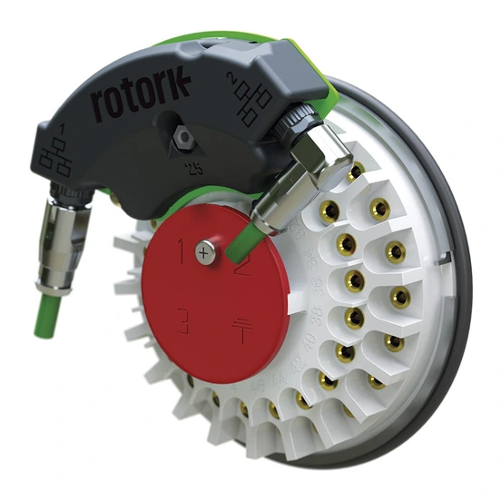

Rotork Master Station và card Ethernet tích hợp cho IQ3 Pro là hai giải pháp kết nối actuator vào hệ thống điều khiển trung tâm. Master Station tập trung quản lý nhiều actuator qua field network (Pakscan hoặc Modbus) rồi kết nối lên DCS/PLC; card Ethernet cho phép từng actuator IQ3 Pro kết nối trực tiếp qua Modbus TCP, EtherNet/IP hoặc PROFINET. Bài viết mô tả sơ đồ kết nối actuator ↔ field network ↔ Master Station ↔ DCS/PLC và khi nào nên dùng giải pháp nào.

Trả lời nhanh
- Master Station vận hành tới 240 actuator trên một loop, hỗ trợ tới 3 field network trên một Master Station.
- Field network Pakscan Classic (2-wire current loop): khoảng cách tới 20 km, 240 node.
- Master Station kết nối lên DCS/PLC qua Modbus TCP (và tùy chọn Modbus RTU), tương thích ngược Pakscan IIE/P3.
- Card Ethernet tích hợp cho IQ3 Pro hỗ trợ Modbus TCP, EtherNet/IP, PROFINET qua RJ45/M12, topology Line/Ring/Star, 10/100 Mbps.
- Card Ethernet đặt trong thân actuator double-sealed, không ảnh hưởng chứng nhận watertight/explosionproof của actuator.
Sơ đồ kết nối hệ thống
Có hai kiến trúc kết nối chính tùy nhu cầu dự án:
- Qua field network và Master Station: Actuator (IQ3 Pro, IQ Pro, CK...) → field network Pakscan Classic hoặc Modbus → Rotork Master Station (tối đa 3 field network, 240 actuator) → kết nối host qua Modbus TCP/RTU → DCS/PLC. Phù hợp khi cần quản lý tập trung số lượng lớn actuator qua một hoặc vài loop cáp.
- Ethernet trực tiếp trên từng actuator: Actuator IQ3 Pro (có card Ethernet tích hợp) → kết nối trực tiếp Modbus TCP/EtherNet-IP/PROFINET qua RJ45 hoặc M12 → mạng Ethernet công nghiệp (Line/Ring/Star) → DCS/PLC hoặc hệ thống quản lý tài sản iAM. Phù hợp khi cần băng thông cao, truy cập dữ liệu chi tiết trực tiếp từ từng actuator, không qua gateway trung gian.
Thông số kỹ thuật chính
| Hạng mục | Rotork Master Station | Card Ethernet tích hợp (IQ3 Pro) |
|---|---|---|
| Số thiết bị/kết nối | Tới 240 actuator/loop, tới 3 field network | Kết nối trực tiếp từng actuator |
| Giao thức field | Pakscan Classic, Modbus | Modbus TCP, EtherNet/IP, PROFINET |
| Giao thức host | Modbus TCP (chính), Modbus RTU (tùy chọn) | Trực tiếp qua Ethernet công nghiệp |
| Khoảng cách (Pakscan Classic) | Tới 20 km, 240 node | Không áp dụng (Ethernet theo hạ tầng mạng) |
| Dự phòng | Hot standby, built-in redundancy | Topology Ring hỗ trợ dự phòng đường truyền |
| Nhiệt độ hoạt động card | Không nêu riêng (theo actuator/thiết bị field) | -40°C đến +70°C |
| Ảnh hưởng chứng nhận actuator | Không áp dụng trực tiếp | Không ảnh hưởng — card nằm trong thân double-sealed |
Tiêu chí chọn kiến trúc kết nối
- Số lượng actuator và khoảng cách: nếu có nhiều actuator trải dài trên khoảng cách lớn, Master Station với Pakscan Classic (tới 20 km) tiết kiệm cáp hơn Ethernet điểm-điểm.
- Hệ thống hiện có: nếu đã có Pakscan IIE/P3, Master Station cho phép nâng cấp mà không cần thay đổi mạng/thiết bị field.
- Nhu cầu băng thông và dữ liệu: nếu cần truy cập nhanh data logger chi tiết của từng actuator hoặc tích hợp trực tiếp iAM, card Ethernet trên IQ3 Pro cho tốc độ cao hơn, không qua gateway trung gian.
- Khu vực nguy hiểm: card Ethernet không ảnh hưởng chứng nhận explosionproof của actuator — vẫn cần xác nhận chứng nhận cụ thể theo khu vực lắp đặt (IECEx/ATEX/UKEX/CSAus...).
- Dự phòng hệ thống: nếu cần dự phòng cao, xem xét Master Station hot standby hoặc topology Ring cho mạng Ethernet.
- Tương thích thiết bị bên thứ ba: Master Station hỗ trợ thiết bị Modbus RTU bên thứ ba (mixer, compressor, transmitter...); card Ethernet chỉ áp dụng cho actuator IQ3/IQ3 Pro (có thể cần upgrade kit/firmware).
Model và range liên quan
| Model/range | Lý do liên quan | Trang sản phẩm |
|---|---|---|
| Master Station/Networks/Protocols | Nhóm giải pháp kết nối chính trong bài | Master Station, Networks & Protocols |
| IQ3 Pro | Actuator hỗ trợ card Ethernet tích hợp | IQ3 Pro Rotork |
Tư vấn Master Station/Ethernet chính hãng tại Việt Nam
Fast Group Engineering là đơn vị cung cấp sản phẩm Rotork chính hãng tại Việt Nam, đầy đủ giấy tờ CO/CQ, catalogue và datasheet theo từng lô hàng. Đội ngũ kỹ thuật hỗ trợ thiết kế sơ đồ kết nối actuator-Master Station-DCS/PLC hoặc actuator-Ethernet trực tiếp, phù hợp hệ thống hiện có trước khi báo giá.
Câu hỏi thường gặp
Rotork Master Station dùng để làm gì?
Master Station là trung tâm điều khiển và giám sát tập trung, vận hành tới 240 actuator trên một loop mạng field network (Pakscan Classic hoặc Modbus), kết nối lên hệ thống DCS/PLC qua Modbus TCP hoặc Modbus RTU, có màn hình touch screen quản lý thiết bị và dữ liệu tài sản.
Master Station có tương thích hệ thống Pakscan cũ không?
Có. Theo tài liệu flyer hiện hành, Rotork Master Station có khả năng tương thích ngược với hệ thống Pakscan IIE và P3, có thể thay thế Master Station cũ mà không cần thay đổi mạng hoặc thiết bị field hiện có.
Card Ethernet tích hợp cho IQ3 Pro hỗ trợ giao thức nào?
Hỗ trợ Modbus TCP, EtherNet/IP và PROFINET, kết nối qua đầu nối RJ45 hoặc M12, tốc độ 10/100 Mbps, hỗ trợ topology Line, Ring và Star, theo tài liệu flyer hiện hành cho actuator dòng IQ3 Pro.
Card Ethernet có ảnh hưởng chứng nhận chống nổ của actuator không?
Không. Option card được đặt trong thân actuator đã được double-sealed, chỉ phần đấu nối dây ở khoang terminal, giúp actuator vẫn giữ được chứng nhận watertight và explosionproof theo tài liệu flyer hiện hành.
Cần gửi thông tin gì để thiết kế hệ thống Master Station/Ethernet?
Gửi số lượng actuator cần kết nối, hệ thống DCS/PLC hiện tại và giao thức tương ứng (Modbus/Profibus/EtherNet-IP/PROFINET), có hệ thống Pakscan cũ cần nâng cấp hay không, và yêu cầu dự phòng (redundancy) cho Fast Group Engineering để đối chiếu trước khi báo giá.
Gửi sơ đồ hệ thống để tư vấn Master Station/Ethernet
Để kiểm tra đúng giải pháp, vui lòng gửi số lượng actuator, hệ thống DCS/PLC hiện tại, giao thức và yêu cầu dự phòng cho Fast Group Engineering qua Zalo/điện thoại (+84) 938 888 958 hoặc email minhduc@fastgroup.vn.
Nguồn tham khảo
- PUB059-047-00, Rotork Master Station Flyer, Issue 01/26 — trang 1 (tính năng chính, sơ đồ hệ thống), trang 2 (asset management, multiple host connectivity, redundancy, tương thích Pakscan).
- PUB190-002-00, Integrated Ethernet Actuator Flyer, Issue 03/25 — trang 1 (giao thức, kết nối, tính năng), trang 2 (thông số kỹ thuật card Ethernet, chứng nhận enclosure IQ3 Pro, tích hợp iAM).
Ghi chú nội bộ: bài chưa xác nhận card Ethernet có tương thích với IQ3 Perform hoặc CK Range hay không — theo PUB190-002, card này dành riêng cho "IQ3 and IQ3 Pro range actuators" (có thể cần upgrade kit/firmware); không suy rộng sang các range khác. Chứng nhận hazardous area liệt kê trong bài (IECEx/ATEX/UKEX/CSAus/INMETRO/CCC Ex/IS-IEC/JNIOSH) áp dụng cho enclosure IQ3 Pro nói chung, cần xác nhận theo từng thị trường cụ thể khi báo giá.